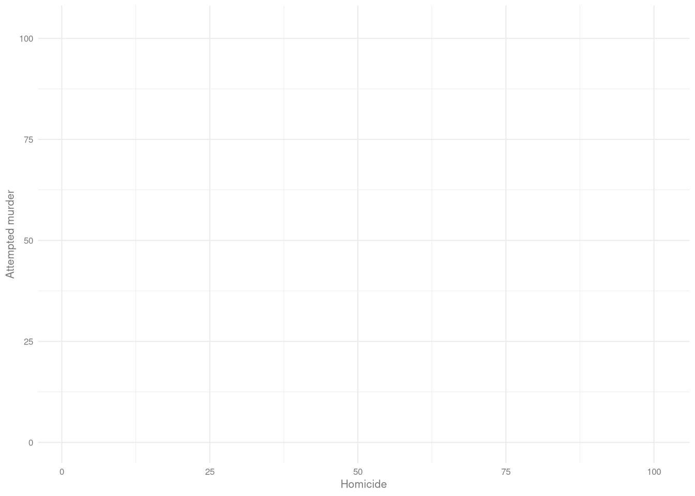
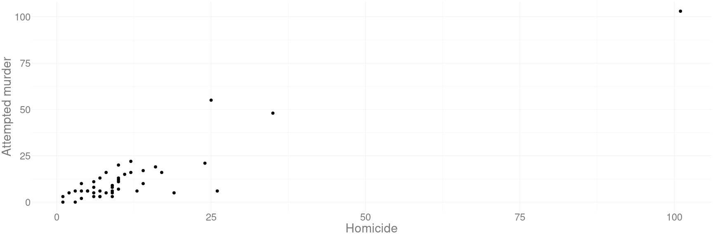
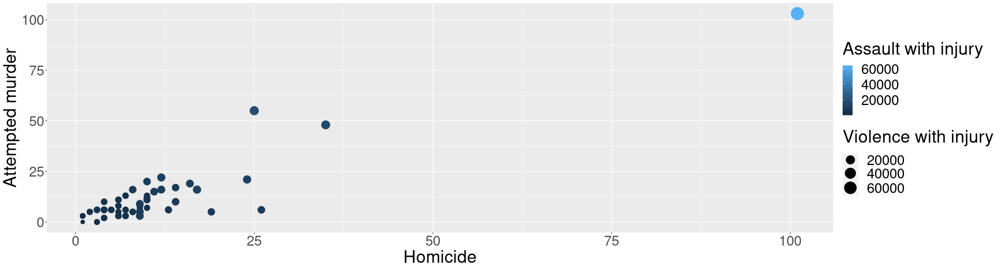
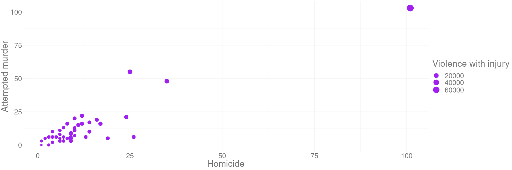
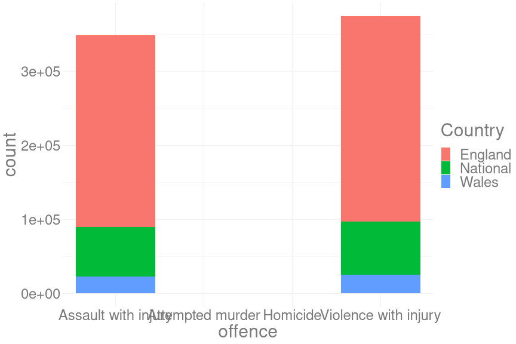
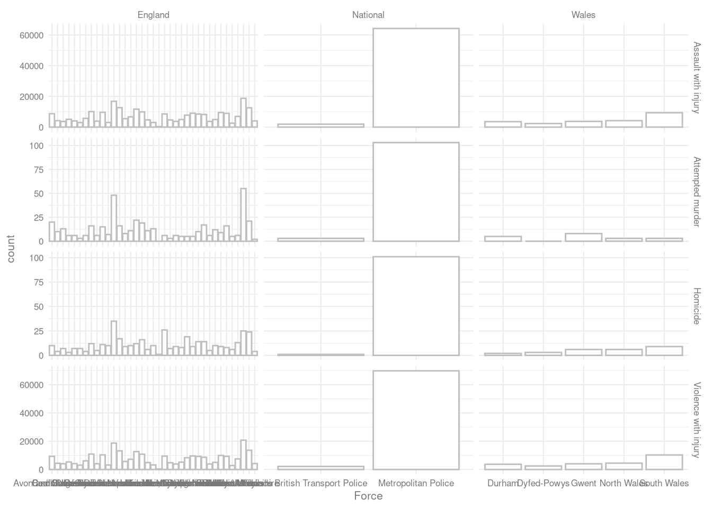
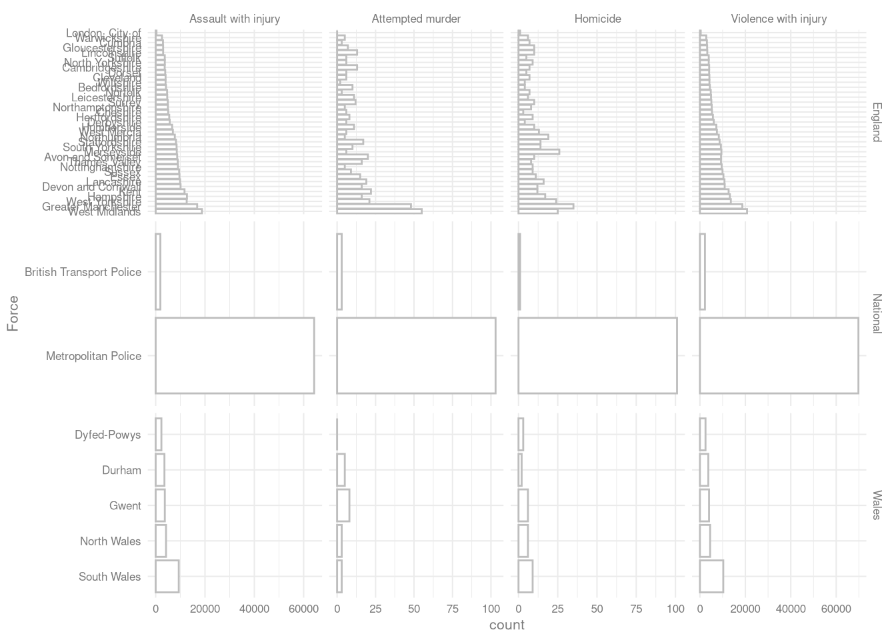

Daten darstellen
pivotieren von Datensätzen
Als Vorbereitung auf die Darstellung von Daten brauchen wir noch eine Funktion.
Für das Grafikpaket, das wir benutzen wollen, müssen die Daten im long format vorliegen. Das heißt, dass jede Variable eine Spalte und jede Zeile eine Beobachtung darstellt.
Insbesondere müssen wir darauf achten, dass alle Werte, die wir zum Beispiel an einer Achse darstellen wollen in einer Variable vorliegen.
Vorbereitung zum Pivotieren
Als Beispiel wollen wir den 'crime'-Datensatz pivotieren. Um das ganze übersichtlicher zu halten, bereiten wir den Datensatz aber noch ein bisschen vor.
Wir wollen dafür
- Den Datensatz einlesen
- Die Spalten
Force,HOMICIDE,Attempted murder,Violence with injuryundAssault with injuryeinlesen. - Die Mord-Spalte so umbenennen, dass der Name in das restliche Schema passt.
- Die
Total-Zeile ausschließen.
Vorbereitung zum Pivotieren
Wie machen wir das?
library(tidyverse)
crime <- read_delim("data/crime_plot.csv",
";", escape_double = FALSE, trim_ws = TRUE) %>%
select(Force,HOMICIDE,Country,`Attempted murder`,
`Violence with injury`, `Assault with injury`) %>%
rename('Homicide' = 'HOMICIDE') %>%
filter(Force != 'Total')
glimpse(crime)## Rows: 44
## Columns: 6
## $ Force <chr> "Avon and Somers…
## $ Homicide <dbl> 10, 4, 1, 7, 3, …
## $ Country <chr> "England", "Engl…
## $ `Attempted murder` <dbl> 20, 10, 3, 13, 6…
## $ `Violence with injury` <dbl> 9293, 4368, 2200…
## $ `Assault with injury` <dbl> 8716, 4171, 1905…pivotieren von Datensätzen
Um den Datensatz in ein längeres Format zu pivotieren, benutzen wir die pivot_longer-Funktion.
Wir erstellen dafür hier einen zweiten Datensatz
crime_long <- crime %>%
pivot_longer(
cols = c('Homicide','Attempted murder',
'Violence with injury', 'Assault with injury'),
names_to = 'offence',
values_to = 'count')
glimpse(crime_long)## Rows: 176
## Columns: 4
## $ Force <chr> "Avon and Somerset", "Avon and …
## $ Country <chr> "England", "England", "England"…
## $ offence <chr> "Homicide", "Attempted murder",…
## $ count <dbl> 10, 20, 9293, 8716, 4, 10, 4368…Vorbereitung für die grafische Darstellung
Abschließend fügen wir noch für später Auswertungen eine Variable hinzu, die codiert, ob die Straftat in einer Verletzung ausgegangen ist oder versuchter/erfolgreicher Mord ist. Dafür benutzen wir die str_detect-Funktion.
crime_long <- crime_long %>%
mutate(type_of_offence = ifelse(str_detect(offence, 'injury'),
'injury',
'(attempted) homicide'))
glimpse(crime)## Rows: 44
## Columns: 6
## $ Force <chr> "Avon and Somers…
## $ Homicide <dbl> 10, 4, 1, 7, 3, …
## $ Country <chr> "England", "Engl…
## $ `Attempted murder` <dbl> 20, 10, 3, 13, 6…
## $ `Violence with injury` <dbl> 9293, 4368, 2200…
## $ `Assault with injury` <dbl> 8716, 4171, 1905…ggplot2
Eins der stärksten Argumente für die Benutzung von R und dem tidyverse ist das Grafik-Paket ggplot2.
Mit ein bisschen Gewöhnung macht ggplot2 es sehr einfach, hübsche Grafiken zu erstellen.
Die Syntax für ggplot2 ist dabei aber ein bisschen anders als die, die wir bisher von R gewohnt sind.
Dafür müssen wir zuerst eine Grundebene erstellen, auf die wir die Grafik anschließend layern können.
Diese Grundebene kann man sich ein bisschen wie eine leere Leinwand vorstellen. Dabei wird beim Erstellen der ‘Leinwand’ direkt festgelegt, auf welchen Daten die Abbildung basieren soll und welche Variablen wie dargestellt werden sollen.
ggplot2
Diese Leinwand erstellt man mit der ggplot-Funktion, in die man, wie in die meisten tidyverse-Funktionen, pipen kann.
Als zweites Argument nach dem Datensatz erwartet ggplot eine Angabe, wie welche Variablen dargestellt werden sollen. Diese Angaben müssen mit aes für aesthetics erstellt werden:
crime_plot <- crime %>%
ggplot(aes(x = Homicide, y = `Attempted murder`))ggplot2
Diese ‘leere Leinwand’ sieht so aus:
crime_plot
aesthetics
Auf diese Leinwand können wir dann eine Reihe von verschiedenen grafischen Elementen legen, den so genannten geoms. Das einfachste Beispiel auf der eben erstellten Leinwand ist ein Scatterplot.
Um der Leinwand Punkte hinzuzufügen, addieren wir einfach einen geom_point-Layer auf die Grafik:
crime_plot + geom_point()
aesthetics
Dieser sehr einfache Graph ist aber natürlich nicht alles. Die aes- und die ggplot-Funktionen können noch eine ganze Reihe an weiteren grafischen Parametern annehmen.
Die für unseren Graphen attraktivsten sind:
size- für die Punktgrößecolor- für die Farbe der Punkteshape- für die Wahl der Symbole
aesthetics
Jedes geom hat auch die Möglichkeit, Daten und aesthetics zu nehmen. Wenn keine gesetzt werden, werden einfach die des ursprünglichen ggplot-Aufrufs übernommen.
crime_plot + geom_point(aes(size = `Violence with injury`,
color = `Assault with injury`))
Die aus mehreren Worten bestehenden Variablennamen sind mit Gravis eingeschlossen, nicht mit Anführungszeichen!
aesthetics
Wenn aesthetic-Argumente außerhalb der aes-Funktion gesetzt werden, geben sie einen konstanten Wert für das geom an:
crime_plot + geom_point(aes(size = `Violence with injury`),
color = 'purple')
geoms
Um andere Grafiken zu erstellen, ersetzt man einfach das geom_point-geom durch ein anderes.
Dabei kann es natürlich nötig sein, eine andere Leinwand zu definieren.
geoms
Histogramme, Boxplots und Barcharts:3
crime %>%
ggplot(aes(x = Homicide)) +
geom_histogram(fill = 'white',
color = 'black',
binwidth = 3)
crime_long %>%
ggplot(aes(y = count,
x = offence)) +
geom_boxplot()
crime_long %>%
ggplot(aes(y = count,
x = offence
)) +
geom_col()
aesthetics
Der Barchart ist ein guter Anlass, den Plot zu optimieren.
Uns stehen die folgenden Informationen zur Verfügung:
glimpse(crime_long)## Rows: 176
## Columns: 5
## $ Force <chr> "Avon and Somerset", "A…
## $ Country <chr> "England", "England", "…
## $ offence <chr> "Homicide", "Attempted …
## $ count <dbl> 10, 20, 9293, 8716, 4, …
## $ type_of_offence <chr> "(attempted) homicide",…Um ein bisschen mehr Spielraum zu haben, gibt es in ggplot facets.
facets!
Facets lassen uns einfach mehrere Subplots definieren, um zusätzlich zu den in unseren geoms und aes-Aufrufen definierten Aspekten Subgruppen darzustellen.
crime_long %>%
ggplot(aes(y = count,
x = Force)) +
geom_col(fill = 'white',
color = 'grey') +
facet_grid(offence~Country, ## als facets mit Straftat in Zeilen und Landesteil in Spalten
scales = 'free') ## mit individuellen Skalen
Wie können wir das noch verbessern?
additional tweeks
Zuerst sortieren wir die Polizeistationen in absteigender Reihenfolge der jeweiligen mittleren Fallzahlen.
Dafür benutzen wir das forcats-Paket aus dem tidyverse. Ein Paket, dass Funktionen zum Verändern und Sortieren von Faktoren bietet.
crime_long %>%
mutate(
Force = as_factor(Force), ## zuerst in Faktor umwandeln
Force = fct_reorder(Force, count,.fun = mean, .desc = T)) %>% ## dann absteigend sortieren
ggplot(aes(y = count,
x = Force)) +
geom_col(fill = 'white',
color = 'grey') +
facet_grid(offence~Country,
scales = 'free')additional tweeks
Um die einzelnen Stationen besser lesbar zu machen, können wir noch die Achsen austauschen.
crime_long %>%
mutate(
Force = as_factor(Force), ## zuerst in Faktor umwandeln
Force = fct_reorder(Force, count,.fun = mean, .desc = T)) %>% ## dann absteigend sortieren
ggplot(aes(y = count,
x = Force)) +
geom_col(fill = 'white',
color = 'grey') +
coord_flip() +
facet_grid(Country ~ offence,
scales = 'free')
themes
Und zuletzt die Achsenbeschriftungen anpassen und die x-Achsen-Beschriftung rotieren.
Die Achsenbeschriftungen und Überschriften lassen sich mit der
labs-Funktion festlegenDie Ausrichtung der Beschriftung (wie die meisten grafischen Aspekte) lassen sich mit der
theme-Funktion fine-tunen
crime_long %>%
mutate(
Force = as_factor(Force), ## zuerst in Faktor umwandeln
Force = fct_reorder(Force, count,.fun = mean, .desc = T)) %>% ## dann absteigend sortieren
ggplot(aes(y = count,
x = Force)) +
geom_col(fill = 'white',
color = 'grey') +
coord_flip() +
facet_grid(Country ~ offence,
scales = 'free') +
labs(x = 'Anzahl',
y = 'Polizeistation',
title = 'Gemeldete Straftaten pro englischer Polizeistation') +
theme(axis.text.x = element_text(angle = 45,
hjust = 1))
Grafiken exportieren
Um die Auflösung zu verbessern können wir jetzt noch die Grafik mit anderen Seitenverhältnissen exportieren. Die ggsave-Funktion lässt uns einfach Grafiken in beliebigen Formaten exportieren.
ggsave(filename = 'imgs/police_stations.png',
width = 50,
height = 100,
units = 'cm')
Für über eine Übersicht über mehr mögliche geoms lässt sich das ggplot2-cheatsheet empfehlen.↩︎